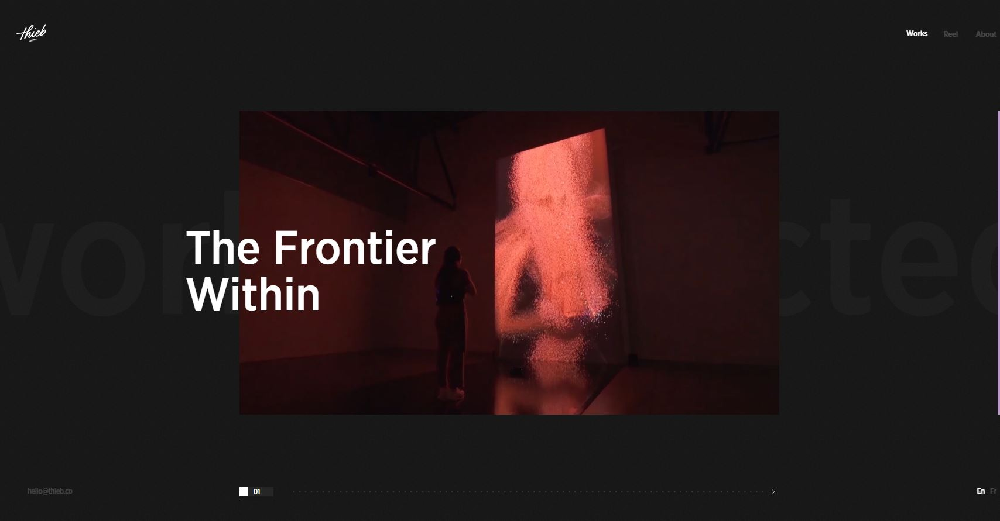

Review 01
thieb.co
When we first land on the page, there is a loading screen that will count up to 100. Afterward, the user has to interact with the website by clicking and holding the left click to enter the website. This will trigger a logo animation of the website. This website is a portfolio that showcases Thiébault Delaporte-Richard's work. The website doesn't contain much text, appart from the about page. The dark background helps contrast and put more emphasis on the author's work. When we hover over the images, it plays a gif/video of the work and we can click on them for further details. There is also multiple way to navigate between each work: by clicking and dragging to the next one, the arrow keys or by waiting for the next one to load. The title of each works are placed over the image and the website contains a lot of transition animation. The visuals are not all interactive, however they are still enticing to the user's eyes. They have multiple pages ranging from the program, the schedule and the map.